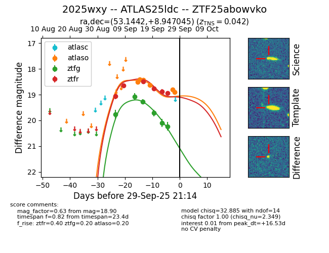
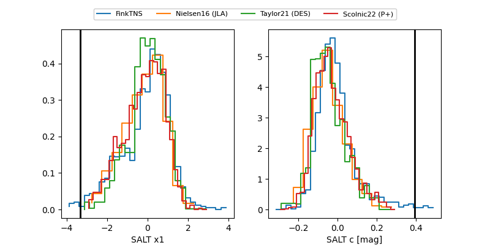

FINK: ZTF25abowvko
Lasair: ZTF25abowvko
ALeRCE: ZTF25abowvko
TNS: 2025wxy
YSE: 2025wxy
ZTF25abowvko (ztf,fink)
2025wxy (tns,yse)
ATLAS25ldc (atlas)
equatorial (ra, dec) = (53.1442,+8.94705)
galactic (l, b) = (175.8911,-36.85148)


last atlaso=18.90, ztfg=20.23, ztfr=18.94
6 atlaso, 6 ztfg, 6 ztfr detections